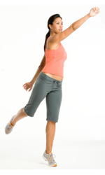

ေလ့က်င့္ခန္း ၅ (အလယ္ အလတ္)

ေျခကို ပခံုး အက်ယ္အတိုင္း ခြဲ ရပ္ပါ။
လက္ေတြကို ေဘးကို ဆန္႔ထားပါ။
ညာေျခကို ညာဘက္ကို ေရႊ႕ျပီး ကိုယ္ကို ညာဘက္ကို ကိုင္းလုိက္ပါ။
ညာဘက္ကို အနည္းငယ္ လွည့္ထားပါ။
အဝိုင္းျပား ပစ္ေတာ့မယ္ ဟန္မ်ိဳး ျပဳလုပ္ပါ။
အဝိုင္းျပား ပစ္လုိက္သကဲ့သို႕ ဘယ္ဘက္ ေျခေထာက္တစ္ေခ်ာင္းတည္း ေပၚမွာ ရပ္ပါ။
ညာဘက္လက္ကို အေရွ႕ အေပၚကို ေရာက္ေအာင္ လႊဲလိုက္ပါ။
၁၀ ၾကိမ္ ေလာက္ ျပဳလုပ္ျပီးရင္ ဘယ္ညာ ေျပာင္းပါ။